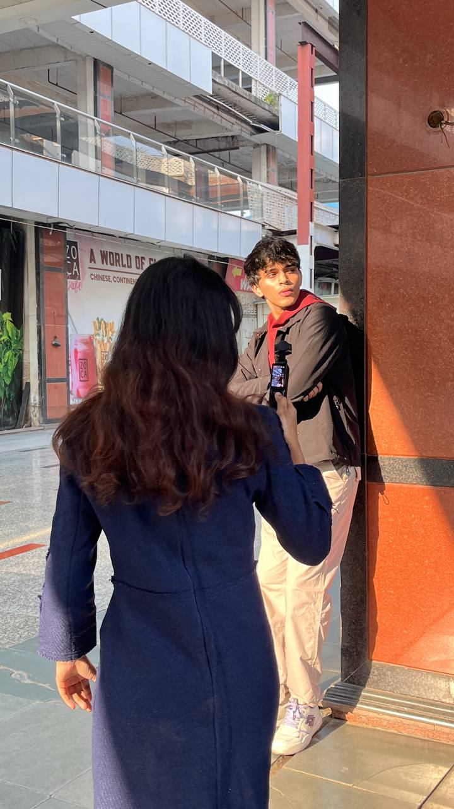
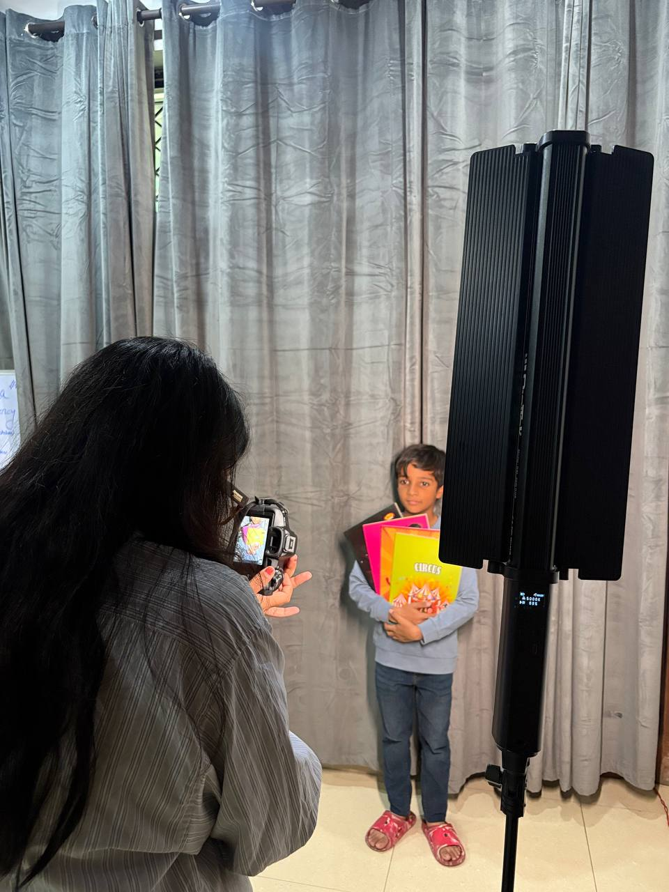

01
Cinematic Storytelling
We don't just produce content; we engineer emotional resonance. Our approach is built on the philosophy that silence speaks louder than noise.

02
Strategic Clarity
Every word and every frame is a mathematical choice. We strip away the unnecessary to reveal the core identity of your brand.

03
Global Impact
From local narratives to global movements, we craft assets that scale across cultures and platforms without losing their soul.